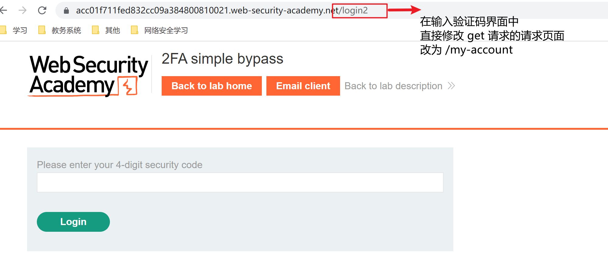

身份认证——双因素认证🚛
Authentication
即身份认证，就是验证给定用户或客户端身份的过程。我的理解就是：让服务器知道你确实就是你所声称的那个人的过程。
提供身份认证证明的三个因素：
what you know(你知道的)，你所知道的信息，例如用户名、密码等
what you have(你拥有的)，你拥有的物理对象，例如手机、安全令牌等
who you are(你是谁)，独有的生物特征，例如指纹，虹膜等
身份认证就是基于一系列技术通过这三个因素中的一个或多个来验证你的身份。
2FA
即双因素认证(Two-factor authentication，简称 2FA)。对于大多数网站而言双因素一般都是：你知道的和你拥有的。例如我们在一些网页上登录时除了在网上输入用户名和密码之外还需要输入手机中的验证码，此时
双因素=密码(你知道的)+手机(你拥有的)
2FA漏洞
尽管双因素认证使网站的安全性有所提高，但是有时可能依旧存在着实施的缺陷，我们依旧可以使用一些方法去让绕过。
-
绕过 2FA 验证
有些网站在你输入了用户名和密码之后提供一个单独的页面让你输入验证码，但在其实你可能已经处于了登录状态，在这种情况下可以尝试直接进入网站。
-
实验室要求我们登录进入 Carlos 的账户页面
首先我们利用题目提供给我们的已知的用户名: wiener 密码: peter 以及邮箱验证码登录进入账户。观察账户页面的URL
我们可以发现正确进入账户后 get 请求所请求的页面是 my-account，由于网页漏洞当我们输入用户名密码之后其实已经处于了登录状态网站并不会去验证你是否真正输入了验证码，因此我们可以在输入验证码界面直接修改 get 请求所请求的页面
-
暴露破解 2FA 验证码
在用户输入用户名和密码并且进入第二步输入验证码之前，用户会被服务器分配一个cookie，在提交验证码时用户将携带 cookie 和验证码的请求发送给服务器，服务器利用cookie来确定该用户是否曾尝试登录。
2.1 无登出的暴力破解
有时一些网站并不会将 cookie 和用户进行匹配，服务器只是记录着这些 cookie 而并不会记录这些 cookie 分别都发给了谁。那就意味着只要我修改请求中的用户名，我就可以让服务器认为我所修改的那个用户正在尝试登陆。基于这个 bug再加上验证码一般是4-6位的数字，我们可以爆破验证码，然后就可以登陆目标用户。
利用 cookie 来登录目标用户 carlos 的账户。首先利用已知账户 wiener:peter 的信息来登录账户，利用 bp 抓包，对请求进行分析。
可以发现，在第一次登录 post 请求发送中，如果输入的是正确的用户名密码的话，服务器会发送状态为302的 response 。在浏览器接收到 response 之后，浏览器又会自动发送一个 get 请求，请求的内容是验证码进行验证登录的页面。也就是该界面
仔细观察第一次登录时发出 post 请求后(前提是用户名、密码正确的情况下)，服务器返回给我们的 response 以及浏览器自动发送的 get 请求中的内容。
我们可以发现浏览器将返回的 response 中的 cookie 添加在了发送的 get 请求中。换言之，在第一次成功登录后，服务器是依靠浏览器所发送的 get 请求中的 cookie 来判断是哪个用户第一次成功登录了，现在要进行的是验证码验证的工作了。
问题的关键也就出在这里，服务器会储存 cookie 中的 session，但服务器并不会将 session 和 verify 进行一个绑定，并且对于浏览器所发送的 get 请求，服务器只会对其中的 session 进行是否存在的一个验证。那就意味着只要我拥有一个有效的 session 和 用户名，我就可以进行验证码验证操作了。
解决过程
-
发送 get 请求至 repeater，更改cookie中的verify，让服务器认为用户 carlos 需要进行验证码验证
-
利用已知账户获取验证码的请求并发送至 intruder 进行验证码爆破
-
将返回状态为302的 response 进行 show in browser 操作
注意：在进行 show in browser 的操作时，浏览器应当处于 bp 代理模式。
2.2 有登出的暴力破解
道理基本上和上一题的相同，都是依靠 cookie 中的 session 来让服务器知晓是哪个用户需要进行验证码验证。但这题的重点在于宏的使用，所以此题直接将目标用户名和密码告诉我们了。而且这是有登出的，这就意味着当我们进行一定数量的验证码尝试时，由于失败次数过多导致服务器自动将我们的账户进行了登出操作，所以我们是无法直接使用 intruder 进行爆破操作的。宏的作用就是记录服务器返回的 csrf 并且自动填充到下一个请求的包体中去。有了宏，我们就可以进行一个相当于自动登录了的操作，intruder 也可以进行持续爆破。
-
本文作者：GhDemi
本文链接： https://ghdemi.github.io/2022/04/28/Authentication%E2%80%94%E2%80%942FA/
文章默认使用 CC BY-NC-SA 4.0 协议进行许可，使用时请注意遵守协议。